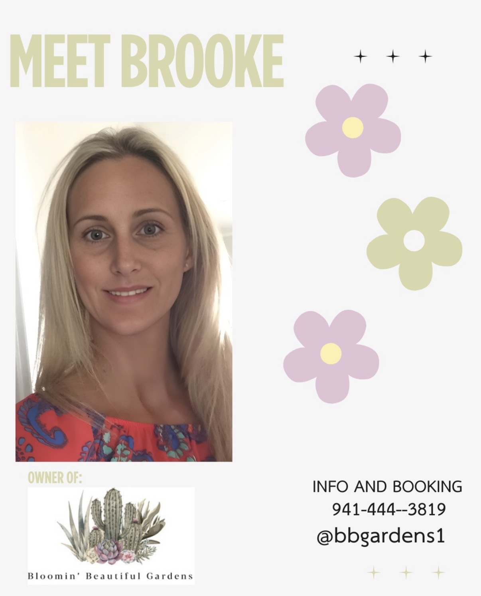

PROJECT 01 · SOCIAL & BRAND

Growing a brand, one post at a time.
I independently handle the business’s marketing and social media, creating and scheduling content while supporting day-to-day client communication.
Fairfield University · Class of 2028
I’m Sydney, a Psychology major and Marketing minor at Fairfield University with an interest in marketing, branding, social media, and digital content creation. I love understanding audiences and creating content that connects businesses with people.
Open to Summer 2027 internship opportunities
People first. Stories that stick.
01 / About me
I’m studying how people think, connect, and make decisions—and bringing that perspective into marketing.
At Fairfield University, I pair a Psychology major with a Marketing minor. Through hands-on roles in social media, customer service, and business administration, I’ve learned to listen closely, stay organized, and make communication feel personal.
02 / Selected projects
A growing collection of marketing and creative work. These descriptions reflect my experience; preview areas are ready for my original photos, screenshots, and videos.

I independently handle the business’s marketing and social media, creating and scheduling content while supporting day-to-day client communication.
Created promotional videos and social media content for a restaurant in Fairfield, Connecticut. Add the restaurant name and original content when ready.
Designed and built this portfolio website as part of a college marketing class. I later refreshed its branding and content to present my experience and creative work for internship applications.
A collection of other marketing videos, graphics, and promotional content I’ve created. Individual pieces can be added as a visual gallery.
03 / Experience
Marketing, communication, customer service, and organization—built through real, hands-on work.
May 2025 — Present
Administrative Assistant & Social Media Manager
May 2022 — May 2025
Employee
Leadership & involvement
04 / Education
Psychology Major · Marketing Minor
Expected May 2028
Dean’s List · 2024–2026Skills & tools
05 / Contact
I’m interested in Summer 2027 marketing internship opportunities and creative collaborations. I’d love to hear from you.
monchersydney2@gmail.com